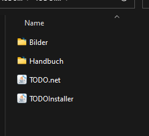
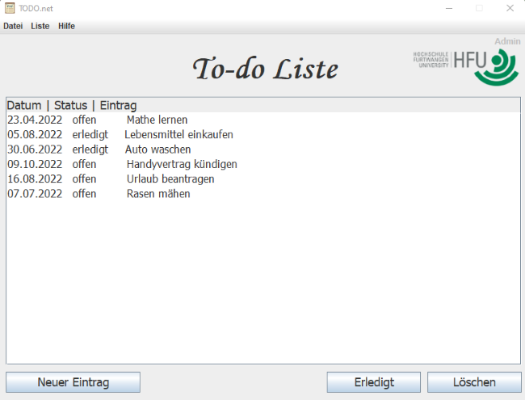
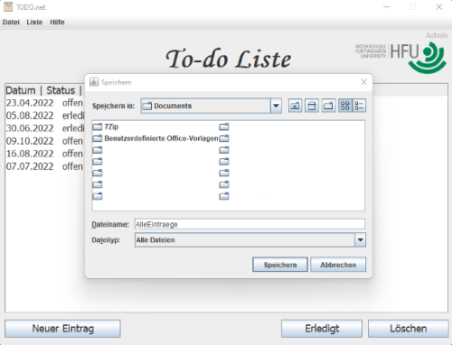
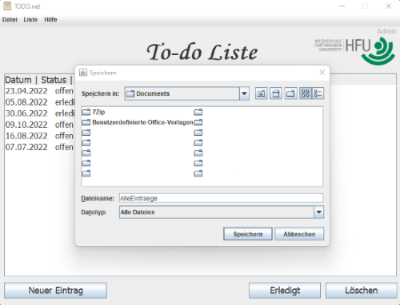

Benutzerhandbuch zur Verwendung der Anwendung.
Im folgenden Handbuch wird beschrieben, wie die TODO-Liste in Form einer Server-Client Anwendung zu verwenden ist.Server
Kurzbeschreibung:Der TODO.net Server (nachfolgend: Server) verwaltet, als zentraler Bestandteil, die Datenbank mit den TODO Listen Eintragen. Da der Server nebenlaeufig ist koennen simultan mehere Benutzeranfragen und Verbindungen verarbeitet werden. Die Kommunikation erfolgt ueber eine unverschluesselte TCP/IP Verbindung. Innerhalb der Datenbank werden erledigte und aus der Liste geloeschte TODOs archiviert. Die Listeneintraege werden nur zentral gespeichert, dies hat mehrere Gruende, zum einen ist so gewaehrleistet dass es zu keinen "Versionskonflikten" von einzelnen Eintragen kommt, zum anderen stellt dieses Vorgehen eine Form der Datensicherung dar.
Serverinstallation:AuthKey.txt:in dieser Datei wird der Authentifikationsschluessel festgelegt
AdminAuthKey.txt:in dieser Datei wird der Authentifikationsschluessel fuer den Admin der Liste festgelegt
Client
Clientinstallation: Zunächst den ZIP Ordner "TODO.net" entpacken. Folgende Datein müssen in einem Ordner gespeichert sein: Bilder, Handbuch, TODO.net.jar, TODOInstaller.jar.Öffnen Sie nun den TODOInstaller und füllen Sie die Felder mit den unten stehenden Angaben aus.
Schlüssel:Schlüssel,der vorher individuell im Server angelegt wurde.
IP-Adresse:"127.0.0.1"
Port:Port des Servers (Standard: "1112")


Anwendung
Einen neuen Eintrag erstellen:
- Klicken Sie auf den Button "Neuer Eintrag". Dabei öffnet sich das Fenster "Neuer Eintrag".
- Geben Sie nun in die Felder unter "Erledigungsdatum" den "Tag", den "Monat" und das "Jahr" in Zahlenform ein.
- Als Admin können Sie mit der Checkbox auswählen, ob ein Benutz in der Lage sein soll ein TODO zu ändern.
- Geben Sie nun den TODO in das Feld unter "Eintrag" ein.
- Sollten Sie den kompletten TODO während des Erstellens erneurn wollen, klicken Sie auf den Button "leeren".
- Sollten Sie doch keinen TODO erstellen wollen, klicken Sie auf den Button "Abbrechen".
- Um den TODO in der Liste zu speichern, klicken Sie auf den Button "Eintrag hinzufügen".

Nun wird der TODO in der TODO-List angezeigt.
Einen Eintrag als "erledigt" einbuchen
- Wählen Sie zunächst ein gewünschtes TODO aus und klicken Sie dann auf den Button "erledigt".
- Sollte der Admin den TODO auf "nicht änderbar" gesetzt haben sind Sie als normaler Benutzer
- nicht in der Lage diesen zu bearbeiten.
Einen Eintrag löschen:
- Klicken Sie auf den Button "Löschen".
- Nun werden Sie nochmals gefragt "Soll der Eintrag wirklich gelöscht werden?"
- Klicken Sie auf "Ja" um den Eintrag entgültig zu löschen.
- Klicken Sie auf "Nein" um den Eintrag wieterhin in der TODO-List zu behalten.
- Sollte der Admin den TODO auf "nicht änderbar" gesetzt haben sind Sie als normaler Benutzer
- nicht in der Lage diesen zu löschen.

Einen Eintrag wiederherstellen:
- Klicken Sie auf den Button "Datei". Danach auf "Wiederherstellen", um ein vor kurzem gelöshtes
- TODO wiederherzustellen.
Einen Eintrag speichern:
- Klicken Sie auf den Button "Datei". Danach auf "Speichern".
- Nun können Sie auswählen ob Sie "Alle Einträge" oder nur "Offene Einträge" speichern wollen.
- Die Textdatei der TODO Liste kann danach in einem beliebigen Verzeichnis gespeichert werden.
 
Einen Eintrag öffnen:
- Klicken Sie auf den Button "Datei". Danach auf "Öffnen".
- Nun können Sie den Ordner auswählen, indem Sie die Textdatei der gespeicherten Liste öffnen wollen.
- Die Liste wird dann direkt in der Anwendung angezeigt.

Einen Eintrag drucken:
- Klicken Sie auf den Button "Datei". Danach auf "Öffnen".
- Dann müssen Sie eine zuvor gespeicherte Liste auswählen, die Sie gerne drucken möchten.
- Klicken Sie anschließend auf den Button "Drucken", um einen Drucker auszuwählen und die Liste zu drucken.

TODO-Liste aktualisieren:
- Klicken Sie auf den Button "Liste". Danach auf "Aktualisieren".
- Die Liste wird allerdings auch bei jeder Aktion oder jeweils nach 30 Sekunden automatisch Aktualisiert.

Hilfe:
- Sollten Sie Hilfe benötigen Klicken Sie auf "Hilfe".Dort können Sie unter "Handbuch" nach Ihrem Problem suchen.
TODO-List beenden:
Um die TODO-List zu beenden klicken Sie auf "Datei" und "Beenden".